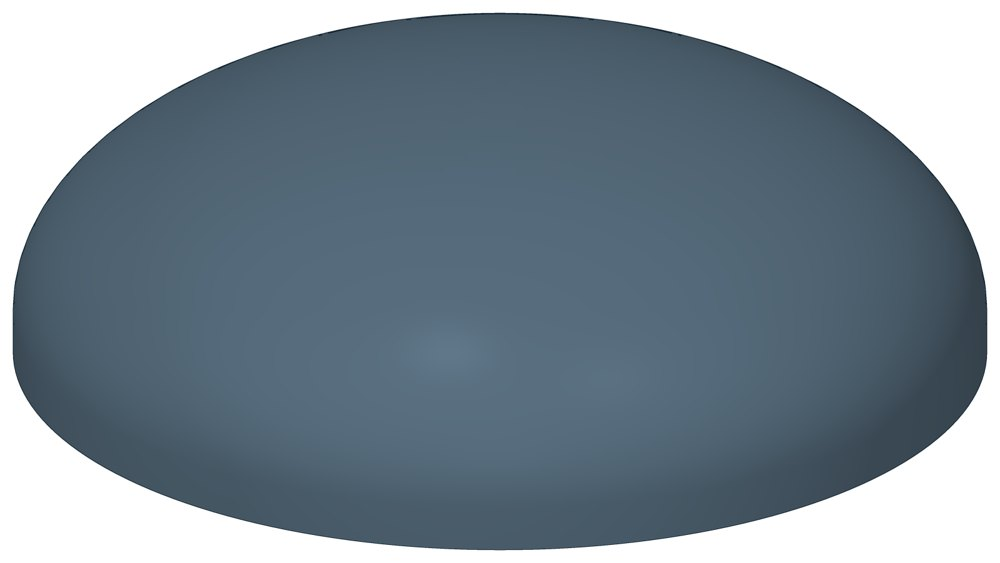

Днище стальное эллиптическое
Эллиптическое отбортованное днище: закрывает торец сосуда, аппарата или трубы большого диаметра.

- Диаметр трубы Dн
- 426–1420 мм
- Документ
- ГОСТ 6533-78
- Исполнений
- 19
- Масса
- 10,5–218,5 кг
- Цена в магазине
- 1 164–47 076 ₽
- 3D-модели
- у 18 из 19 исполнений
Применение и монтаж
Назначение: где применяется
Наружный диаметр 426–1420 мм. Днище подбирают по наружному диаметру и толщине стенки.
Отличия от соседних типов
Для труб малого диаметра — Заглушки по ГОСТ 17379-2001.
D — наружный диаметр, S — толщина стенки, H — высота выпуклой части, h1 — высота цилиндрического борта. Масса — по таблице ГОСТ 6533-78.
Таблица исполнений
| Обозначение | Код ПРОМБУРГ | Dмм | Sмм | Hмм | h1мм | Цена₽ | Массакг | Артикул | Магазин | 3D |
|---|---|---|---|---|---|---|---|---|---|---|
| 426×6 | ПБ-ДН-0426-1 | 426 | 6 | 106 | 25 | 1 164 | 10,5 | TEN1864 | Купить | 3D |
| 426×8 | ПБ-ДН-0426-2 | 426 | 8 | 106 | 25 | 1 440 | 13,9 | TEN1865 | Купить | 3D |
| 426×10 | ПБ-ДН-0426-3 | 426 | 10 | 106 | 25 | 1 914 | 17,1 | TEN1866 | Купить | 3D |
| 426×12 | ПБ-ДН-0426-4 | 426 | 12 | 106 | 25 | 2 209 | 20,3 | TEN1867 | Купить | 3D |
| 530×6 | ПБ-ДН-0530-1 | 530 | 6 | 132 | 25 | 1 677 | 15,9 | TEN1868 | Купить | 3D |
| 530×8 | ПБ-ДН-0530-2 | 530 | 8 | 132 | 25 | 2 249 | 21 | TEN1869 | Купить | 3D |
| 530×10 | ПБ-ДН-0530-3 | 530 | 10 | 132 | 25 | 2 624 | 25,9 | TEN1870 | Купить | 3D |
| 530×12 | ПБ-ДН-0530-4 | 530 | 12 | 132 | 25 | 3 156 | 30,9 | TEN1871 | Купить | 3D |
| 630×10 | ПБ-ДН-0630-1 | 630 | 10 | 157 | 25 | 7 827 | 36,4 | TEN1872 | Купить | 3D |
| 630×12 | ПБ-ДН-0630-2 | 630 | 12 | 157 | 25 | 9 371 | 43,3 | TEN1873 | Купить | 3D |
| 720×10 | ПБ-ДН-0720-1 | 720 | 10 | 180 | 25 | 10 120 | 47,1 | TEN1874 | Купить | 3D |
| 720×12 | ПБ-ДН-0720-2 | 720 | 12 | 180 | 25 | 12 061 | 56,1 | TEN1875 | Купить | 3D |
| 720×14 | ПБ-ДН-0720-3 | 720 | 14 | 180 | 40 | 14 773 | 68,7 | TEN1876 | Купить | 3D |
| 820×10 | ПБ-ДН-0820-1 | 820 | 10 | 205 | 25 | 13 029 | 60,6 | TEN1877 | Купить | 3D |
| 920×10 | ПБ-ДН-0920-1 | 920 | 10 | 230 | 25 | 16 297 | 75,8 | TEN1878 | Купить | 3D |
| 1020×10 | ПБ-ДН-1020-1 | 1020 | 10 | 255 | 40 | 20 726 | 96,5 | TEN1879 | Купить | 3D |
| 1020×20* | ПБ-ДН-1020-2 | 1020 | 20 | — | — | 42 140 | — | TEN1880 | Купить | — |
| 1220×12 | ПБ-ДН-1220-1 | 1220 | 12 | 305 | 40 | 35 046 | 162,8 | TEN1881 | Купить | 3D |
| 1420×12 | ПБ-ДН-1420-1 | 1420 | 12 | 335 | 40 | 47 076 | 218,5 | TEN1882 | Купить | 3D |
* Примечания к исполнениям:
- 1020×20 — Такой толщины для этого диаметра в ГОСТ 6533-78 нет: размеры и масса — по запросу
Цена — из магазина promburg.ru на дату редакции каталога 12.10.2026, ₽ за штуку; актуальную цену и наличие уточняйте при заказе.
Чтобы заказать, сообщите обозначение и код ПРОМБУРГ: +7 (499) 325-51-35, promburg@yandex.ru.
Нормативные документы
- ГОСТ 6533-78 Днища эллиптические отбортованные стальные для сосудов, аппаратов и котлов. Основные размеры — документ, по которому изготавливается изделие
- ГОСТ 17379-2001 Детали трубопроводов бесшовные приварные из углеродистой и низколегированной стали. Заглушки эллиптические. Конструкция
На трубу Dн 426–1420 мм в каталоге
Позиции каталога с исполнениями на те же наружные диаметры трубы.
Опоры и подвески
- Опора неподвижная двухупорная ТС-660 общих Dн: 9
- Опора неподвижная четырёхупорная ТС-661 общих Dн: 9
- Опора неподвижная двухупорная усиленная ТС-663 общих Dн: 9
- Опора неподвижная четырёхупорная усиленная ТС-664 общих Dн: 9
- Опора неподвижная щитовая ТС-666 общих Dн: 9
- Опора неподвижная щитовая усиленная ТС-667 общих Dн: 9
- Опора неподвижная боковая ТС-668 общих Dн: 9
- Опора неподвижная бугельная с корпусом ТС-671 общих Dн: 9
- Опора скользящая приварная ТС-624 общих Dн: 9
- Опора скользящая хомутовая ТС-626 общих Dн: 9
- Опора скользящая бугельная ТС-627 общих Dн: 9
- Опора катковая двухъярусная ТС-628 общих Dн: 9
- Опорные плиты диэлектрические ТС-632 общих Dн: 9
- Хомутовые опоры СК 2109-92 общих Dн: 9
И ещё 74 типа — в оглавлении каталога.
Компенсаторы
- Компенсатор сильфонный стартовый СК общих Dн: 9
- Компенсатор сильфонный 2ОПКР общих Dн: 8
- Компенсатор сильфонный 2ОПКР (ИЯНШ) 2ОПКРИ общих Dн: 8
- Компенсатор сильфонный 2СКУ.М 2СКУМ общих Dн: 8
- Компенсатор сильфонный 2СКУ.М (ИЯНШ) 2СКУМИ общих Dн: 8
- Компенсатор сильфонный 2СКУ.ППМ (ИЯНШ) 2СКУППМИ общих Dн: 8
- Компенсатор сильфонный КС общих Dн: 8
- Компенсатор сильфонный КСО общих Dн: 8
- Компенсатор сильфонный КСО (ИЯНШ) КСОИ общих Dн: 8
- Компенсатор сильфонный КСОФ общих Dн: 8
- Компенсатор сильфонный ОПКР общих Dн: 8
- Компенсатор сильфонный ОПКР (ИЯНШ) ОПКРИ общих Dн: 8
- Компенсатор сильфонный сейсмический общих Dн: 8
- Компенсатор сильфонный СКУ.М СКУМ общих Dн: 8
И ещё 14 типов — в оглавлении каталога.
Другие детали
- Фланец стальной плоский приварной общих Dн: 9
- Фланец стальной воротниковый общих Dн: 8
- Отвод стальной крутоизогнутый 90° общих Dн: 7
- Отвод стальной крутоизогнутый 90°, 09Г2С общих Dн: 5
- Заглушка стальная эллиптическая общих Dн: 3
- Переход стальной концентрический общих Dн: 2
Другие типы раздела
Детали трубопроводов (отводы, переходы, фланцы, заглушки, днища, тройники)
- Заглушка стальная эллиптическая
- Отвод стальной крутоизогнутый 90°, 09Г2С
- Отвод нержавеющий 90°
- Отвод стальной крутоизогнутый 90°
- Переход стальной концентрический
- Тройник стальной равнопроходный
- Фланец стальной воротниковый
- Фланец стальной плоский приварной
- Фланцы прочие
Частые вопросы
Что указать в заявке, чтобы получить цену без уточнений?
Обозначение с номером исполнения или код ПБ, количество, Dн и стенку трубы, расчётную температуру наружного воздуха, покрытие, город доставки и желаемый срок. Кнопка «В заявку» в таблице собирает спецификацию, которую можно выгрузить в Excel или отправить письмом.
Масса в таблице — фактическая?
Нет, справочная: в стандартах масса рассчитана по номинальным размерам. У переходов в ГОСТ 17378-2001 это масса трубной заготовки — готовый переход легче.
Что выбрать: заглушку или днище?
Заглушки по ГОСТ 17379-2001 — для труб; в каталоге наружный диаметр от 32 до 630 мм. Днища по ГОСТ 6533-78 — для сосудов, аппаратов и труб большого диаметра: от 426 до 1420 мм. По ГОСТ 6533-78 днища наружным диаметром от 820 мм изготавливают по согласованию с изготовителем.
Детали подбирают по Ду или по наружному диаметру?
Приварные детали — отводы, переходы, тройники, заглушки, днища — по наружному диаметру и толщине стенки трубы, запись вида 219×6. Фланцы — по условному проходу Ду и давлению Ру.
Как устроен код ПРОМБУРГ у деталей?
Код вида ПБ-ФП-0015-1: вид детали, наружный диаметр или Ду четырьмя цифрами, номер строки внутри этого вида и диаметра. ПБ-ФП-0015-1 — фланец плоский Ду 15, первая строка (Ру 10); ПБ-ОТВ-0021-1 — отвод 21,3×2.